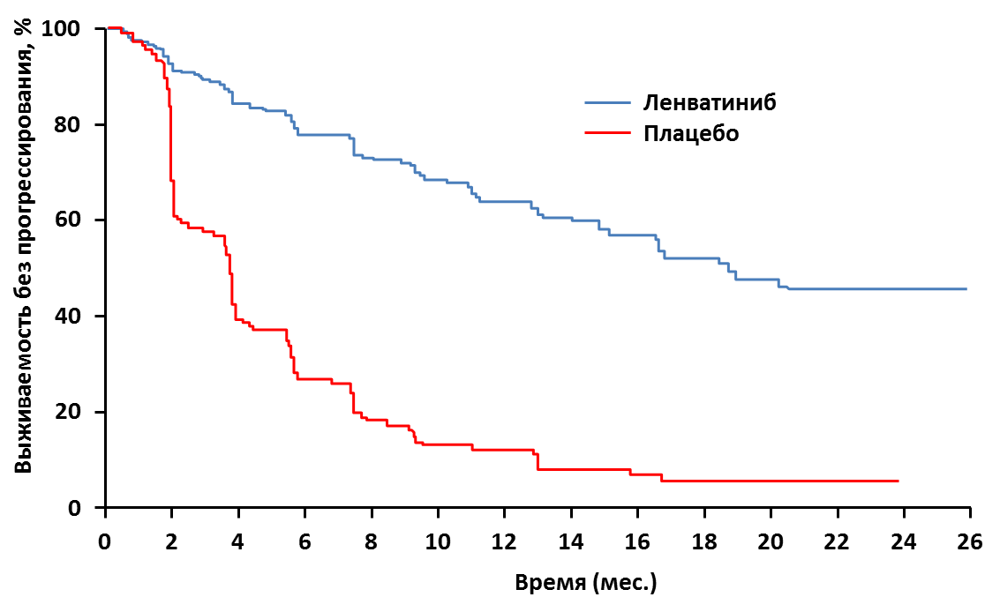

Результаты рандомизированного клинического исследования III фазы SELECT: улучшение выживаемости без прогрессирования у больных раком щитовидной железы при лечении ленватинибом
Доктор Martin Schlumberger из Institut Gustave Roussy, Франция, представил результаты рандомизированного двойного слепого плацебо-контролируемого клинического исследования III фазы SELECT по применению ленватиниба у пациентов с раком щитовидной железы (РЩЖ) на заседании 50-й ежегодной конференции Американского общества клинической онкологии (ASCO).
Препарат ленватиниб – пероральный ингибитор тирозинкиназы рецепторов VEGFR1-3, FGFR1-4, PDGFR?, RET и KIT. В КИ II фазы ленватиниб уже показал клиническую эффективность у пациентов с РЩЖ, рефрактерных к терапии радиоактивным йодом I131. В исследование SELECT было включено 392 пациента с дифференцированным РЩЖ рефрактерных к терапии I131 и подтвержденным прогрессированием заболевания в последние 13 мес. Пациенты (медиана возраста 63 года; 51% мужчин) были стратифицированы по возрасту (?65, >65 лет), месту проживания, предшествующей терапией ингибиторами VEGFR и рандомизированы в группы лечения ленватинибом (24 мг/сут, цикл 28 дней) или плацебо. При прогрессировании болезни пациенты в контрольной группе начинали получать ленватиниб (открытая фаза исследования). Основной оцениваемый показатель – выживаемость без прогрессирования (ВБП). Дополнительные оцениваемые показатели включали частоту объективных ответов (ЧОО), общую выживаемость (ОВ) и безопасность.
Через 2 года прогрессирование заболевания наблюдали у 86% пациентов в контрольной группе и у 41% в группе лечения ленватинибом (рис. 1). Медиана ВБП была достоверно выше в группе ленватиниба – 18,3 мес. по сравнению с 3,6 мес. в группе плацебо (ОР 0,21; 95% ДИ [0,14–0,31]; р < 0,0001). Преимущество ВБП при лечении ленватинибом наблюдали во всех подгруппах пациентов. Таргетную терапию ингибиторами VEGFR ранее получало 66 из 261 больных в группе лечения ленватинибом и 27 из 131 в контрольной группе. Предшествующая терапия ингибиторами VEGFR не оказывала значительного влияния на эффективность лечения ленватинибом (медиана ВБП у больных, получавших и не получавших ранее терапию, 15,1 мес. и 18,7 мес. соответственно). Частота полных ответов для ленватиниба и плацебо составила 1,5% (n=4) и 0% соответственно, частота частичных ответов – 63,2% (n=165) и 1,5% (n=2), соответственно. Медиана ОВ не достигнута. Количество летальных исходов в группе лечения ленватинибом – 71 случай (27,2%), в контрольной группе – 47 случаев (35,9%).
Рисунок 1. Выживаемость без прогрессирования пациентов, получавших ленватиниб и плацебо в исследовании SELECT

Доктор M. Schlumberger отметил, что нежелательные явления (НЯ) наблюдались почти у всех участвовавших в исследовании пациентов: в группе лечения ленватинибом у 260 пациентов (> 99%) и в контрольной группе у 118 пациентов (90%). Наиболее частыми побочными эффектами ленватиниба были артериальная гипертензия (68%), диарея (59%), снижение аппетита (50%), потеря веса (46%), тошнота (41%). Редукция дозы ленватиниба проводилась 78,5% пациентов, прекратили лечение по причине нежелательных явлений 14,2%.
По мнению доктора A. D. Colevas из Stanford Cancer Institute, США, полученные данные уникальны, однако заставляют задуматься. Отсутствие улучшения ОВ в группе лечения по сравнению с контрольной группой, возможно, было артефактом перекрестного дизайна исследования, при котором пациенты, начавшие лечение в группе плацебо, после прогрессирования болезни стали принимать ленватиниб. Также не совсем ясно, у каких пациентов терапия ленватинибом эффективна. Кроме того, согласно дизайну исследования пациенты получали препарат на ранних этапах заболевания, и часть пациентов, возможно, была перелечена. В рамках исследования не оценивалось влияние препарата на качество жизни пациентов, но ясно, что за счет побочных эффектов препарата оно ухудшалось по сравнению с группой плацебо.
Несмотря на это, исследование продемонстрировало клинически значимые результаты, с более выраженным опухолевым ответом, чем в исследовании DECIDE, представленном на конференции ASCO 2013 г., в котором у аналогичной популяции больных исследовалось применение сорафениба. По мнению доктора A. D. Colevas ленватиниб следует рассматривать как новый стандарт лечения, и нет необходимости проводить сравнительное исследование ленватиниба и сорафениба.